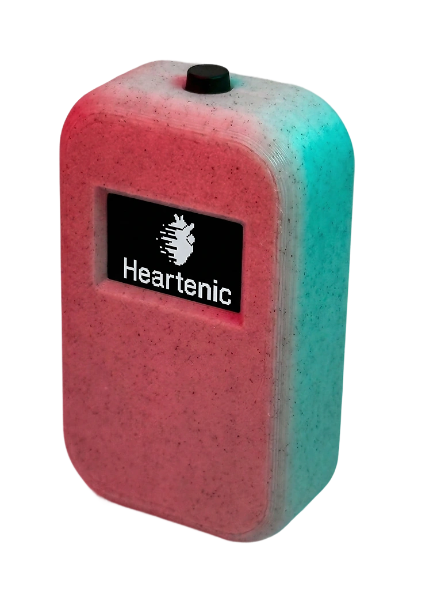

El Meditador de Bolsillo
Tu pausa, en cualquier lugar
Una guía física de respiración y meditación que te acompaña con una pequeña pantalla que indica el ritmo y un motor de vibración que te lo hace sentir. Físico, tangible y 100% enfocado.

Diseñado para la Calma
Increíblemente sencillo y natural de usar. Sin distracciones. Sin notificaciones. Solo tú y tu respiración.
Simplicidad Ante Todo
No es un gadget más, es una invitación a la calma. Un solo botón es todo lo que necesitas.
Retroalimentación Háptica
Motor de vibración que te guía suavemente a través de cada respiración, creando una conexión táctil.
Tres Modos de Uso
- Un clic: ejercicio breve guiado
- Tres clics: modo meditación continua
- Clic largo: ver estadísticas de uso
Ergonómico y Portátil
Forma compacta que se adapta perfectamente a tu mano. Llévalo en la bolsa o en el bolsillo.
Personalizable
Elige los tiempos de cada ciclo y el arte del dipositivo, adaptalo a tu forma personal de meditar.
Open Source
El diseño y el código están abiertos. Puedes estudiarlo, modificarlo o incluso construir tu propia versión.
Open Source y Accesible
El Meditador de Bolsillo no es solo una idea: es un dispositivo funcional, probado y con un alto nivel de desarrollo técnico. Estamos trabajando para que muy pronto puedas comprar el tuyo.
También creemos que este proyecto le pertenece a todos. Por eso liberamos el diseño y el código como open source. No solo para que puedas ver cómo está hecho, sino para que puedas adaptarlo, mejorarlo o incluso construir tu propia versión.